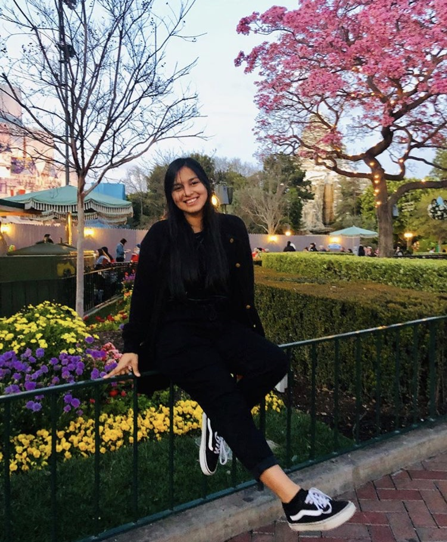

(first generation college student)
 “I
was in the ELD program until 5th grade. I remember the tests we had to
take: they felt tedious and that they didn’t even test my knowledge. The
questions were dumb and made me feel stupid and I missed out on my
actual classes. They put me in a remedial English class and I began to
think less about myself for knowing another language. Then I began to
lose my Spanish. The thing that I didn’t understand was that I got
advanced and proficient scores in all the tests they made me take and in
my actual classes and they wouldn’t remove me from the program. My
friend Maria was still in remedial classes in high school where her only
expectation was to graduate high school which I felt was depressing
because they limited her. If I didn’t get out of ELD I feel like I would
have ended up like her.”
(college student)
“I
was in ELD all of my elementary school education. I didn’t understand
why I was in the program because English was my first language. Covering
topics that I learned in 2nd grade while I was in 6th grade. My school
implemented and pushed ELD because 80% of the school were
Latino/Hispanic so I thought it was normal since most of the people that
I knew were in it. The program was completely useless in my opinion and
most of the students already spoke English and Spanish fluently, so the
program didn’t pertain to most of them. If anything, I believe it
didn’t prepare me for real courses and took time away from my actual
ones.”
(First generation college student)
“I remember being in ELD until I was about 11. The routine was that a
teacher would take you or even several Hispanic students and put them in
another room where we would go over basic English words and I felt out
of place. I knew I was smart; I would get A’s in my regular classes but I
felt like my classmates and teachers would think less of me because I
was placed into ELD. I would miss out on my regular classes and would
lose out on skills I needed in order to do my homework. I remember I
would stay after school at the computer lab and type on the keyboard
each letter to make a word and felt unaccomplished because this school
thought that was all I was capable of. It wasn’t until I was 11 and my
mom forced the school to take me out. However, I found out that they
kept me in the program until freshmen year of high school in order to
make more money off of me. I don’t think the ELD program is suited to
helping students but instead limiting their potential capabilities and
socially reproducing students to only expect to graduate high school.
 “For me, ELD classes
were something normal. Most of the students at my school would go to
them. I knew a handful of students didn’t, and I just thought they
didn’t need the help. Looking back at it, most of my friends and I just
saw it as time away from actual class. I also felt like I did not learn
much from it. We had to do simple work. The thing I disliked most about
it was that I was not allowed to talk Spanish. I remember one teacher
even telling us to avoid talking Spanish during our recesses. Many of my
friends lost some of their Spanish, and if it weren’t for my parents
only talking to me in Spanish, I think I would have too.”
“For me, ELD classes
were something normal. Most of the students at my school would go to
them. I knew a handful of students didn’t, and I just thought they
didn’t need the help. Looking back at it, most of my friends and I just
saw it as time away from actual class. I also felt like I did not learn
much from it. We had to do simple work. The thing I disliked most about
it was that I was not allowed to talk Spanish. I remember one teacher
even telling us to avoid talking Spanish during our recesses. Many of my
friends lost some of their Spanish, and if it weren’t for my parents
only talking to me in Spanish, I think I would have too.”